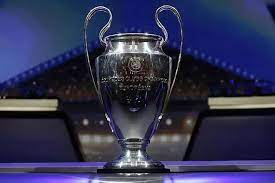

La Liga de Campeones de la UEFA(en inglés y oficialmente,Champions League), también conocida como Copa de Europa, es el torneo internacional oficial de fútbol más prestigioso a nivel de clubes en Europa. Organizado por su estamento continental, la UEFA; Es es disputado anualmente desde su instauración en la temporada 1955-56, y su final es el acontecimiento deportivo más seguido en el mundo, con una audiencia estimada entre 350 y 400 millones de espectadores, por delante de la NFL y la NBA.
